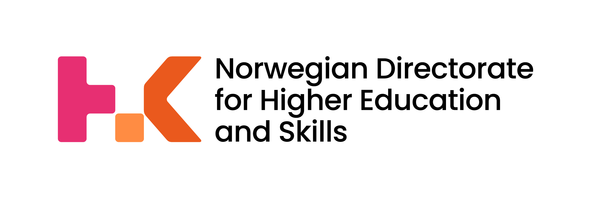
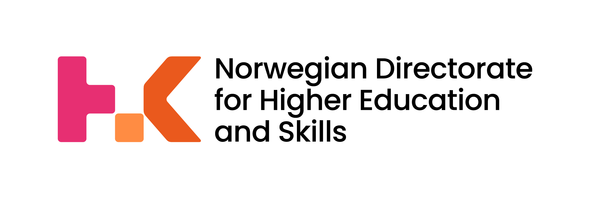

Construxercise! helps to:
Construxercise! is designed to be a useful practical tool for both learners and language instructors of Russian as a foreign language. The proposed exercises can be used both in the classroom and for self-guided study.
Construxercise! vocabulary and grammar target A2-B1 levels of language proficiency (according to CEFR, the Common European Framework of Reference for Languages). Bonus exercises employ more advanced vocabulary to benefit the learners at levels B2-C1.
Constructions are the building blocks of language. Constructions are patterns of word choices, word combinations, and sentence structures that are often difficult for foreign learners to master. A typical construction is made up of fixed pieces and slots where you can add words. For example, in the construction что касается NP-Gen, то Cl, the words “что касается” and “то” are fixed elements, while NP-Gen (= noun phrase in the genitive case) and Cl (= clause, sentence) are open slots that can be filled with different fillers. Thus, this construction provides a structure that you can use to build an entire sentence, for instance: Что касается спорта, я очень люблю бегать.
A language is more than just words and grammar rules. Construxercise! presents ready-to-use communicative patterns that you can employ to build confidence and proficiency. Learning Russian by its constructions is a strategic and research-based approach inspired by the theory of language called Construction Grammar. All constructions you will learn in Construxercise! are thoroughly described and illustrated in the Russian Constructicon, a large collection of over 2,200 Russian constructions available at https://constructicon.github.io/russian/.
The exercises are grouped by lessons and by functions. Each of the twelve lessons introduces a group of five to six constructions using vocabulary and grammar connected to a given topic. On the page “Lessons” the user can find twelve lessons for topics like Работа (Getting a job), Поход к врачу (Going to the doctor), Внешность (Personal appearance), etc. Each lesson takes approximately 45 minutes to complete and contains 12 to 15 exercises.
Alternatively, one can access the exercises on the page “Functions” where they are grouped according to why they are used: to express one's subjective opinion, to add information, to clarify one's point, etc. The exercises encourage learners to engage in speaking and writing. The constructions are stylistically neutral and can be used in a wide variety of genres and topics.
Our philosophy is that the more you produce Russian on your own, the more you learn (learning-by-doing). You can train in speaking and writing already at early stages of learning Russian. We focus on simple constructions that enrich your language skills, make your speech more fluent, native-like, and give you confidence to engage in conversation.
The team of collaborators includes Anna Endresen, Elena Bjørgve, Valentina Zhukova, Daria Demidova, Natalia Kalanova, Georgiy Lonshakov, and David Henrik Lavén.
The project is administered at UiT The Arctic University of Norway and is supported by the Directorate for Higher Education and Skills of the Norwegian Ministry of Education and Research (HK-dir, https://hkdir.no, the grant UTF-2020/10129).
When using the materials available here, please provide the following citation:
Endresen, Anna, Elena Bjørgve, Valentina Zhukova, Daria Demidova, Natalia Kalanova, and Georgiy Lonshakov. 2022. Construxercise! Hands-on learning of Russian constructions. A digital educational resource. https://constructicon.github.io/construxercise-rus/
Anna Endresen anna.endresen@uit.no ; Valentina Zhukova valentina.a.zhukova@uit.no
Construxercise! поможет:
Construxercise! — это практический ресурс, который предназначен для студентов и преподавателей русского языка как иностранного. Предлагаемые задания могут использоваться и на занятиях в классе, и для самостоятельного изучения дома.
По уровню лексики и грамматики задания соответствуют уровням владения иностранным языком A2-B1 (базовый и средний уровни согласно общеевропейской шкале CEFR). В дополнительных бонусных упражнениях используется более сложная лексика, соответствующая уровням B2-C1 (уровень выше среднего и продвинутый).
Конструкции — это языковые структуры, которые образуют предложения, их части и язык в целом, подобно кирпичикам в здании. Вся речь носителей языка пронизана конструкциями, а для изучающих иностранный язык конструкции далеко не очевидны, и поэтому вызывают многочисленные трудности.
Вам, должно быть, знакома ситуация, когда при изучении иностранного языка вы
составляете предложение по всем правилам, услышав которое носители этого языка
скажут: все понятно, так сказать можно, но так никто не говорит. Как правило, дело в
том, что в языке уже существует общепринятый способ выражения этой мысли — с
помощью определенной конструкции. Примерами русских конструкций являются:
нет-нет да и VP-Pfv, как в предложении Он нет-нет да и спросит
(NP-Gen) не напасёшься (на NP-Acc), как в предложении На всех не напасешься
NP-Nom Cop так себе, как в предложении Картина была так себе
Хорош VP-Ipfv.Inf!, как в предложении Хорош прыгать!
Типичная конструкция имеет фиксированную часть и переменные. Например, в конструкции что касается NP-Gen, то Cl, слова “что касается” и “то” — это фиксированные элементы, а NP-Gen (= имя существительное в родительном падеже с зависимыми словами) и Cl (= клауза, или предложение) — переменные. Так, эта конструкция имеет структуру, которую можно использовать для построения целого предложения, например, Что касается спорта, я очень люблю бегать или Что касается музыки, я предпочитаю классику.
Знание языка не исчерпывается знанием слов и грамматических правил. Ресурс Construxercise! предлагает готовые к использованию коммуникативные структуры, которые придадут студенту уверенности и помогут продвинуться в изучении иностранного языка. Изучение русского языка через конструкции — это стратегически эффективный и подкрепленный исследованиями подход, который опирается на теорию Грамматики Конструкций. Все конструкции, которые отрабатываются в упражнениях, детально описаны и проиллюстрированы в Русском конструктиконе — ресурсе, где собрано более 2200 конструкций русского языка https://constructicon.github.io/russian/.
Упражнения сгруппированы по урокам и по функциям. В каждом из 12 уроков на странице “Lessons” вводится 5-6 конструкций. Лексика и грамматика уроков соответствуют заявленным темам: Работа, Поход к врачу, Внешность и т.д. При этом сами конструкции могут использоваться в текстах любой тематики. Каждый урок содержит 12-15 упражнений, выполнение которых занимает около 45 минут.
На странице “Functions” упражнения сгруппированы по функциям, которые конструкции выполняют в тексте: выразить мнение, добавить информацию, пояснить мысль и др. Отобранные конструкции стилистически нейтральны и присутствуют в текстах самых разных жанров.
Чем больше студенты самостоятельно порождают тексты на русском языке, тем лучше они осваивают язык. Активная отработка навыков устной и письменной речи возможна уже на ранних стадиях изучения русского языка. Конструкции, которые мы предлагаем, достаточно просты по структуре и использованию, но значительно обогащают речь, приближают ее к уровню носителей языка и придают уверенности для участия в разговоре.
Анна Эндресен, Елена Бьёргве, Валентина Жукова, Дарья Демидова, Наталия Каланова, Георгий Лоншаков, Дэвид Хенрик Лавен
Проект осуществлен в Норвежском Арктическом Университете и поддержан Норвежским управлением по вопросам образования и обучения Министерства Образования и Исследований Норвегии (HK-dir, https://hkdir.no, грант UTF-2020/10129).
При использовании материалов ресурса необходимо приводить следующую ссылку:
Endresen, Anna, Elena Bjørgve, Valentina Zhukova, Daria Demidova, Natalia Kalanova, and Georgiy Lonshakov. 2022. Construxercise! Hands-on learning of Russian constructions. A digital educational resource. https://constructicon.github.io/construxercise-rus/
Анна Эндресен anna.endresen@uit.no ; Валентина Жукова valentina.a.zhukova@uit.no

 
